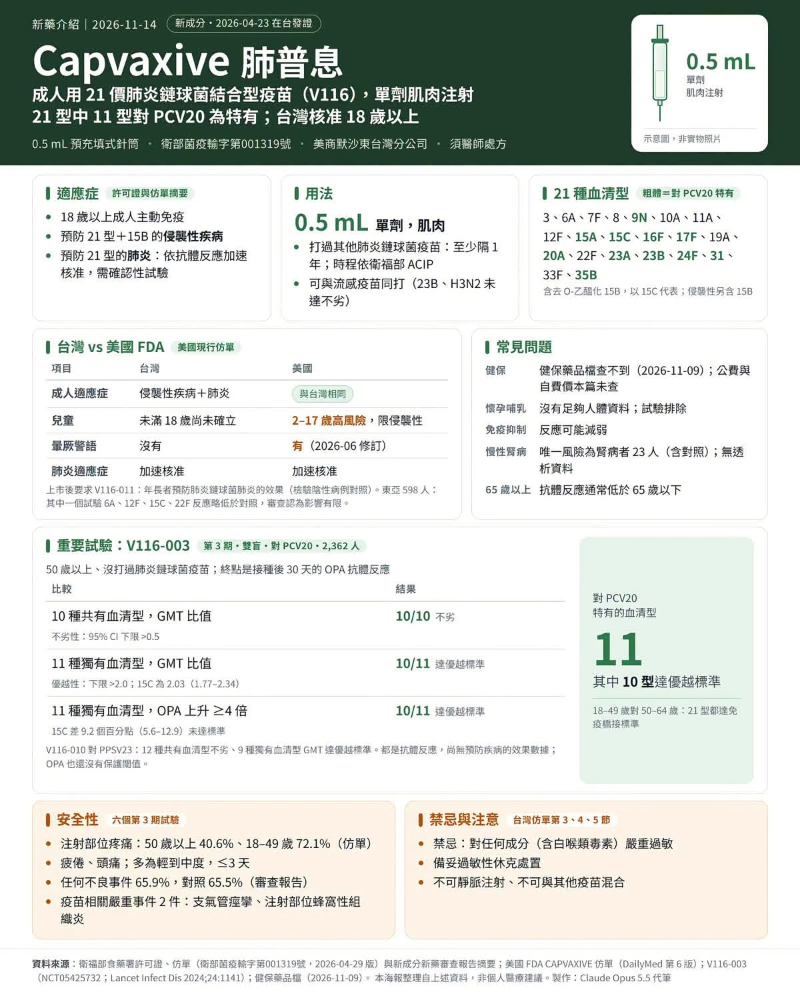
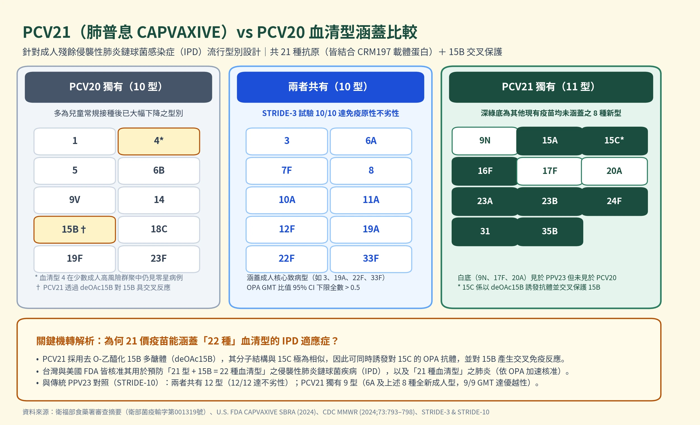
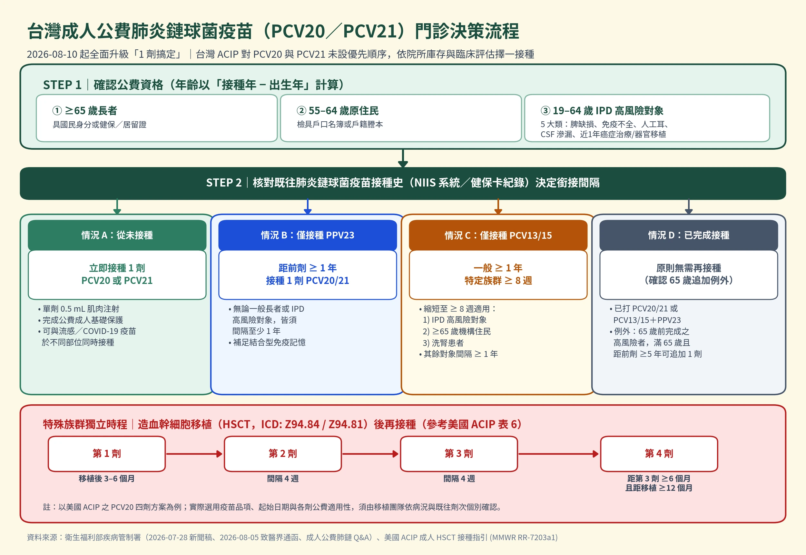
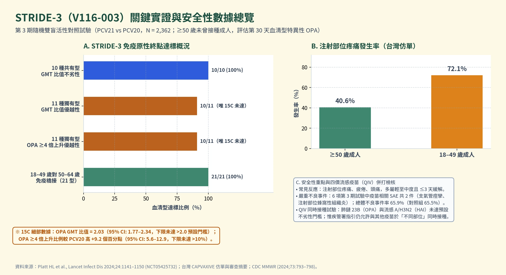

肺普息 CAPVAXIVE（PCV21）｜成人 21 價肺炎鏈球菌結合型疫苗
詳細圖文解說與臨床實證查核：從血清型設計、deOAc15B 交叉保護機轉、台灣最新公費銜接流程，到 STRIDE-3／STRIDE-10／流感疫苗併打證據完整剖析。
1. 實證查核摘要與核心重點
經查核衛生福利部疾病管制署（2026-07-28 新聞稿、2026-08-05 致醫界通函、21 價疫苗專頁），成人公費肺炎鏈球菌疫苗繼 2026-01-15 改為 1 劑 PCV20 後，已自 2026 年 8 月 10 日（含）起全面升級為 PCV20 或 PCV21 二選一。台灣 ACIP 並未優先推薦其中一種；門診開立前請先確認年齡、IPD 高風險資格與既往接種史。
（含 8 種現有疫苗未涵蓋型）
獨有型 10/11 達優越（唯 15C）
預充填式針筒肌肉注射
高風險/機構/洗腎可縮短至 8 週
原始資料與獨立實證查核對照
| 查核項目 | 查核結果 | 實證覆核說明與臨床解讀 |
|---|---|---|
| 台灣公費給付狀態 | 圖卡已過時／正文正確 | 原始圖卡（2026-11-14）僅查詢健保藥品檔（2026-11-09）而標註「查不到、公費未查」。事實上公費肺鏈疫苗由疾管署專案採購（不列於一般健保藥價檔），且已自 2026-08-10 正式納入成人公費（疾管署致醫界通函）。 |
| 台灣核准日期與字號 | 完全相符 | 2026-04-23 發證，許可證號衛部菌疫輸字第001319號（食藥署審查摘要），核准 18 歲以上成人主動免疫；肺炎適應症依 OPA 加速核准，上市後確認性試驗為 V116-011-00。 |
| 美國 FDA 2026 擴增適應症 | 完全相符 | 美國 FDA 已於 2026-06-17 依據第 3 期 STRIDE-13（NCT06177912） 核准擴增至 2–17 歲已完成基礎兒童肺鏈疫苗且具高風險慢性病童之 IPD 預防，並於 2026-06 審查加入暈厥（syncope）警語（FDA 2026-06-17 核准函、FDA 臨床審查備忘錄）。台灣仿單目前仍僅限成人。 |
| STRIDE-3 & STRIDE-10 數據 | 完全相符 | STRIDE-3 對照 PCV20 共有 10 型 10/10 不劣、獨有 11 型 10/11 優越（唯 15C 未達預設嚴格門檻）；STRIDE-10 對照 PPV23 共有 12 型 12/12 不劣、獨有 9 型 9/9 GMT 優越（8/9 達 ≥4 倍上升優越，唯 15C 未達）（Lancet Infect Dis 2024、Vaccines 2025）。 |
| 流感疫苗併打（STRIDE-5） | 完全相符 | 與四價不活化流感疫苗（QIV）同時接種時，肺鏈 23B（OPA）與流感 A/H3N2（HAI）未達預設不劣性門檻（CDC MMWR 2024），但疾管署指引仍允許與其他疫苗於不同部位同時接種。 |
2. 原始圖卡與基本規格
原圖備註：圖卡保留當時的查詢結果。PCV21 自 2026 年 8 月 10 日起已納入台灣成人公費，資格與間隔請見 公費接種流程。
以下完整保留使用者提供之新藥介紹原始圖卡，便於對照仿單重點與試驗摘要。請留意圖卡右下「健保／公費未查」項目，本文第 4 節已依疾管署 2026-08-10 最新公費規定完整更新。

3. 台灣核准適應症與血清型解析
- 核准對象與用法：台灣核准 18 歲以上成人主動免疫，單劑 0.5 mL 肌肉注射（預充填式針筒，不可靜脈注射、不可與其他疫苗混合於同一針筒）（台灣仿單）。
- 雙重適應症範圍：
- 預防指定 22 種血清型（21 型 + 15B）引起之侵襲性肺炎鏈球菌疾病（IPD）。
- 預防指定 21 種血清型引起之肺炎：此適應症係依調理吞噬活性（OPA）免疫原性指標加速核准，仍須透過上市後確認性試驗驗證真實臨床保護效益；台灣食藥署審查報告列 V116-011-00（高齡成人檢驗陰性病例對照研究）為上市後確認性研究（食藥署審查摘要）。
- 專為成人設計的抗原組合：21 種莢膜多醣體皆個別結合至白喉毒素無毒突變體載體蛋白 CRM197（FDA SBRA 2024）。與傳統從兒童疫苗延伸而來的 PCV13／15／20 不同，PCV21 刻意剔除兒童常規接種後已大幅減少的血清型（如 1、5、6B、9V、14、18C、19F、23F），改納入 8 種目前其他已核准疫苗均未涵蓋的成人流行殘餘型（15A、15C、16F、23A、23B、24F、31、35B）（CDC MMWR 2024）。

3.1 關鍵機轉：deOAc15B 如何同時保護 15C 與 15B？
CAPVAXIVE 製劑中含有去 O-乙醯化的 15B 莢膜多醣體（deOAc15B）。由於 15C 多醣體天然幾乎缺乏 O-乙醯基團，deOAc15B 與 15C 具有高度相似的分子結構，因此能誘發針對 15C 的 OPA 抗體反應，同時對 15B 產生具功能性的交叉免疫反應（達到預設的 ≥4 倍 OPA 上升標準）。因此台灣與美國 FDA 皆將 15B 一併納入 IPD 預防適應症（FDA SBRA 2024、CDC MMWR 2024）。
3.2 台灣仿單 vs 美國 FDA 現行核准差異
| 比較項目 | 台灣（衛福部食藥署 TFDA） | 美國（U.S. FDA） |
|---|---|---|
| 成人適應症 | 18 歲以上成人：22 型（21 型+15B）IPD 與 21 型肺炎 | 與台灣相同（2024-06-17 核准） |
| 兒童／青少年 | 未滿 18 歲安全性與療效尚未確立（僅限成人） | 2026-06-17 擴增核准：2–17 歲具肺炎鏈球菌疾病高風險者之 IPD 預防（依據 STRIDE-13，FDA 核准函） |
| 暈厥（Syncope）警語 | 現行仿單未列載 | 有（2026-06 修訂納入，FDA 臨床審查備忘錄） |
| 肺炎適應症核准方式 | 依 OPA 加速核准；上市後確認性試驗 V116-011-00（東亞族群 598 人次分析中，6A/12F/15C/22F 於單一試驗略低於對照，審查認為影響有限） | 依 OPA 加速核准；要求上市後確認性臨床效益試驗 |
4. 台灣成人公費資格與門診接種流程
自 2026 年 8 月 10 日（含）起，全國約 2,800 家合約醫療院所提供符合公費資格之成人接種 1 劑 PCV20 或 PCV21，取代過往 PCV13＋PPV23 兩劑舊制（疾管署新聞稿）。公費對象年齡統一以「接種年 − 出生年」計算，包含三大類：
- 65 歲以上長者（具中華民國國民身分，外籍人士須具健保身分或居留證）。
- 55–64 歲原住民（須檢具戶口名簿或戶籍謄本等證明）。
- 19–64 歲符合 IPD 高風險定義者（可由診斷書、病歷或健保就醫紀錄佐證）。

4.1 19–64 歲五大類 IPD 高風險對象定義
依疾管署 IPD 高風險對象 ICD 參考表與致醫界通函，五大類公費高風險條件如下：
- 脾功能缺損（例如脾切除術後、無脾症）。
- 先天性或後天性免疫功能不全（含 HIV 感染、長期免疫抑制治療等）。
- 人工耳植入者（Cochlear implant）。
- 腦脊髓液（CSF）滲漏。
- 過去一年內曾因惡性腫瘤接受藥物或放射治療者，以及器官移植者：疾管署通函明確列舉癌症藥物治療包含化學治療、生物製劑、標靶治療及免疫治療；ICD 參考表亦明列 Z94.84（幹細胞移植狀態）與 Z94.81（骨髓移植狀態）。
4.2 既往接種史與台灣成人公費銜接間隔
| 既往肺炎鏈球菌疫苗接種史 | 台灣成人公費銜接建議（2026-08-10 起） | 臨床備註 |
|---|---|---|
| 從未接種過 | 直接接種 1 劑 PCV20 或 PCV21 | 一劑完成基礎保護 |
| 僅接種過 PPV23 | 距前劑間隔 至少 1 年，接種 1 劑 PCV20 或 PCV21 | IPD 高風險對象亦須滿 1 年 |
| 僅接種過 PCV13 或 PCV15 | 一般對象間隔 至少 1 年； IPD 高風險者、65 歲以上機構住民、洗腎患者可縮短至 至少 8 週 |
仿單原則載明 ≥1 年並指向 ACIP；8 週例外為公費政策明定 |
| 已接種 PCV20／PCV21，或已完成 PCV13／15＋PPV23 | 原則視為已完成，無需再接種。 例外：19–64 歲 IPD 高風險對象若於 65 歲前完成 PCV13/15＋PPV23，可於滿 65 歲（含）且距前劑 ≥5 年時再追加 1 劑 PCV20 或 PCV21（新北市衛生局、疾管署 Q&A）。 |
既往自費銜接個案依疾管署 Q3、Q10 評估 |
4.3 特殊情境：造血幹細胞移植（HSCT）後獨立再接種時程
參考美國 ACIP 成人 HSCT 接種建議（表 6，以 PCV20 四劑方案為例）：於移植後 3–6 個月開始接種，前 3 劑各間隔 4 週；第 4 劑須同時滿足距第 3 劑至少 6 個月且距移植至少 12 個月。實際疫苗品項（PCV20 或其他選擇）、起始日期與各劑公費適用性，應由原移植團隊依移植物抗宿主疾病（GVHD）及免疫重建狀態個別確認。
5. 關鍵第三期臨床實證（STRIDE 計畫）
5.1 STRIDE-3（V116-003，NCT05425732）：頭對頭對照 PCV20
STRIDE-3 為第 3 期、隨機、雙盲、活性疫苗對照試驗（總收納 N = 2,362，發表於 Platt et al., Lancet Infect Dis 2024;24:1141–1150；NCT05425732），主要評估 50 歲以上未曾接種肺鏈疫苗成人於接種後第 30 天的血清型特異性調理吞噬活性（OPA），並納入 18–49 歲族群進行免疫橋接。

| 評估終點（接種後第 30 天 OPA） | 預設統計門檻 | STRIDE-3 實際結果 |
|---|---|---|
| 10 種與 PCV20 共有血清型 （3, 6A, 7F, 8, 10A, 11A, 12F, 19A, 22F, 33F） |
不劣性：OPA GMT 比值 95% CI 下限 > 0.5 | 10 / 10 達不劣性 |
| 11 種 PCV21 獨有血清型（GMT 比值） （9N, 15A, 15C, 16F, 17F, 20A, 23A, 23B, 24F, 31, 35B） |
優越性：OPA GMT 比值 95% CI 下限 > 2.0 | 10 / 11 達優越性；唯 15C 之 GMT 比值為 2.03（95% CI 1.77–2.34），因下限略低於 2.0 未達預設門檻 |
| 11 種 PCV21 獨有血清型（≥4 倍上升比例） | 優越性：與 PCV20 比例差 95% CI 下限 > 10 個百分點 | 10 / 11 達優越性；唯 15C 僅高 +9.2 個百分點（95% CI 5.6–12.9），下限未達 >10% |
| 18–49 歲對 50–64 歲免疫橋接 | OPA GMT 比值不劣性標準 | 21 / 21 型全數達免疫橋接標準 |
5.2 STRIDE-10（V116-010，NCT05569954）：對照傳統 PPV23
於 ≥50 歲未曾接種肺鏈疫苗成人中頭對頭比較 PCV21 與 PPV23（Jotterand et al., Vaccines 2025;13(4):341；NCT05569954）：
- 12 種共有血清型（3, 7F, 8, 9N, 10A, 11A, 12F, 17F, 19A, 20A, 22F, 33F）：12 / 12 達不劣性。
- 9 種 PCV21 獨有血清型（6A, 15A, 15C [deOAc15B], 16F, 23A, 23B, 24F, 31, 35B）：OPA GMT 9 / 9 達優越性；OPA ≥4 倍上升比例 8 / 9 達優越性（唯 15C 未達）。
5.3 臨床判讀與證據限制（為何 ACIP 未設優先順序？）
- 尚無臨床保護閾值：STRIDE 系列試驗皆採用 OPA 抗體反應作為替代終點，目前醫學界尚未建立能精確預測成人 IPD 或肺炎臨床保護力的 OPA 效價門檻（correlate of protection）。
- 15C 統計落差原因：PCV20 含有 15B 抗原，本身即可對 15C 產生部分交叉抗體反應，可能部分解釋 PCV21 在 15C 未達預設優越性門檻（2.03 倍，95% CI 1.77–2.34）。
- 在地流行病學考量：選擇 PCV20 或 PCV21 時，須綜合考量台灣本地成人 IPD 流行血清型分布、個別病人是否處於血清型 4 風險環境，以及台灣 ACIP「兩者皆可、不設優先」的現行建議。
6. 安全性、禁忌症、特殊族群與同時接種
6.1 常見不良反應與嚴重事件
- 局部反應：最常見為注射部位疼痛，台灣仿單載明發生率為 ≥50 歲 40.6%、18–49 歲 72.1%（仿單分年齡組報告）。
- 全身反應：疲倦、頭痛最常見；絕大多數局部與全身反應皆為輕至中度，且持續不超過 3 天（台灣仿單）。
- 整體安全性彙整（6 項第 3 期試驗）：任何不良事件發生率為 65.9%（對照組 65.5%）；經判定與疫苗相關之嚴重不良事件（SAE）共 2 件（支氣管痙攣、注射部位蜂窩性組織炎），整體耐受性與既有結合型疫苗相當（食藥署審查摘要）。
6.2 禁忌症與特殊族群注意事項
| 項目／族群 | 臨床注意事項與實證現況 |
|---|---|
| 絕對禁忌症 | 曾對 CAPVAXIVE 任一成分或含白喉類毒素疫苗（含 CRM197）發生嚴重過敏反應（如過敏性休克）者禁用；接種現場須備妥過敏性休克急救處置（CDC MMWR 2024）。 |
| 懷孕與哺乳 | 臨床試驗排除孕婦，目前人體安全性資料有限，臨床上須權衡感染風險與潛在效益。 |
| 免疫抑制族群 | 免疫功能低下或接受免疫抑制療法者，接種後的抗體反應可能減弱，惟仍建議依高風險資格接種。 |
| 慢性腎臟病（CKD） | 台灣審查資料指出，試驗中唯一風險因子為腎病者僅 23 人（含對照組），且無透析病人專屬臨床試驗資料；實務上洗腎患者仍列為公費優先保護與 8 週縮短間隔對象。 |
| 65 歲以上長者 | 抗體幾何平均效價通常低於 65 歲以下成人（免疫衰老現象），但整體仍具顯著免疫原性。 |
6.3 與流感疫苗同時接種（STRIDE-5 實證檢核）
於 ≥50 歲成人進行的四價不活化流感疫苗（QIV）同時接種試驗中，併打組的整體抗體數值略低於分開接種組，大多數抗原皆達不劣性，唯肺炎鏈球菌血清型 23B（OPA 下限未達 >0.50）與流感 A/H3N2（HAI 下限未達 >0.67）未達預設不劣性門檻（FDA 仿單第 14.3 節、CDC MMWR 2024）。惟考量提高接種完成率與減少病人往返之公衛實益，台灣疾管署公費 Q&A 第 11 題仍明確允許 PCV21 與流感、COVID-19 等其他疫苗在不同部位同時接種（如左、右上臂分開施打）。
7. 參考文獻與官方來源
- 衛生福利部疾病管制署（2026-07-28）：成人公費肺炎鏈球菌疫苗自 2026 年 8 月 10 日起全面升級為 20 價或 21 價新型疫苗，接種「1 劑搞定」。
- 衛生福利部疾病管制署（2026-08-05）：致醫界通函：自 115 年 8 月 10 日（含）起，成人肺炎鏈球菌疫苗全面升級為 20 價或 21 價新型疫苗。
- 衛生福利部疾病管制署（2026-08-07）：21 價結合型肺炎鏈球菌疫苗（PCV21）專頁 與 成人公費肺炎鏈球菌疫苗 Q&A。
- 衛生福利部疾病管制署：19–64 歲 IPD 高風險對象 ICD 參考表；新北市政府衛生局：成人公費肺炎鏈球菌疫苗接種資訊。
- 衛生福利部食品藥物管理署（2026-04-23）：肺普息 CAPVAXIVE 台灣仿單（衛部菌疫輸字第001319號） 與 新成分新藥審查報告摘要。
- Platt HL, Bruno C, Buntinx E, et al. Safety, tolerability, and immunogenicity of an adult pneumococcal conjugate vaccine, V116 (STRIDE-3): a randomised, double-blind, active comparator controlled, international phase 3 trial. Lancet Infect Dis. 2024;24(10):1141–1150. DOI｜NCT05425732。
- Jotterand V, et al. A Phase 3 Randomized Trial Investigating the Safety, Tolerability, and Immunogenicity of V116 Compared with PPSV23 in Adults ≥50 Years of Age (STRIDE-10). Vaccines (Basel). 2025;13(4):341. PMC12031205｜NCT05569954。
- Kobayashi M, Leidner AJ, Gierke R, et al. Use of 21-Valent Pneumococcal Conjugate Vaccine Among U.S. Adults: Recommendations of the ACIP — United States, 2024. MMWR Morb Mortal Wkly Rep. 2024;73(36):793–798. CDC MMWR；HSCT 再接種指引：CDC MMWR RR-7203a1 表 6。
- U.S. FDA: CAPVAXIVE 專頁、2024-06-17 SBRA、2026-06-17 2–17 歲高風險擴增核准函、2026-06-18 臨床審查備忘錄 與 DailyMed 美國仿單。